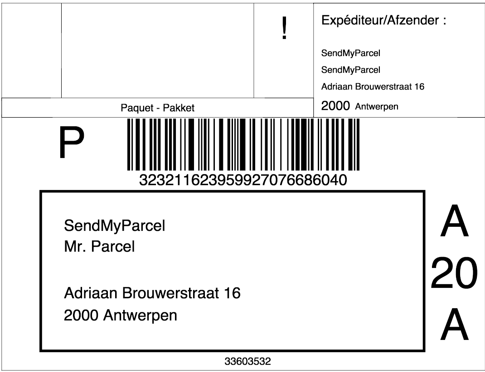

Inleiding
In deze handleiding laten we zien hoe je de MyParcel plug-in kunt installeren in jouw PrestaShop omgeving. Vervolgens geven wij een instructie van het gebruik van de plug-in.
De installatie en het gebruik van de koppeling wordt je kosteloos aangeboden door MyParcel. Wij helpen je graag met vragen over het gebruik van de plug-in. Omdat PrestaShop een opensource platform is kan het zijn dat de MyParcel plug-in conflicteert met reeds geïnstalleerde plug-ins. Mocht je problemen ondervinden met de installatie, raden wij je aan contact op te nemen met jouw webbouwer.
Inhoud
1 Installatie
Dit hoofdstuk omschrijft de installatie van de MyParcel PrestaShop Plug-in met gebruik van de knop “Nieuwe Module toevoegen”. In dit hoofdstuk zal ook beschreven worden hoe de module te installeren met gebruik van "FTP"
Wij adviseren de installatie altijd eerst op een testomgeving uit te voeren en een back-up te maken van jouw webshop voor je begint.
- Download het MyParcel PrestaShop Plug-in.zip bestand
1.1 Via het CMS
- Ga naar Modules → Modules en Services en klik vervolgens op Nieuwe Module toevoegen. Selecteer met behulp van de knop "Kies een bestand" het gedownloade zip bestand.
- Als het bestand is geselecteerd dan klik je op de knop "Upload deze module".

1.2 Testen
Met de plugin van MyParcel worden bepaalde bezorgopties toegevoegd aan jouw checkout. Welke bezorgopties je jouw klant aan wil bieden kun je instellen in de configuratie van de MyParcel plug-in. Wij adviseren dan ook om na het installeren van de plugin jouw bestelproces goed door te lopen of alles naar wens is.
Ook omdat niet alle checkouts in PrestaShop hetzelfde werken is het nogmaals goed om te kijken of alles naar wens staat. Staat alles op de juiste plaats en is het goed uitgelijnd? Onze tip is om hier naar te kijken voordat jouw klanten dit gebruiken.
2 Configuratie
- Ga in PrestaShop naar Modules → Modules en Services → MyParcel → Configureer

2.1 Instellingen
2.1.1 API instellingen
Om verbinding te kunnen maken met jouw MyParcel account is het noodzakelijk om hier jouw API-key in te vullen.

Als je ingelogd bent in jouw myparcelaccount op backoffice.myparcel.nl dan kun je deze vinden in menu Instellingen → Algemeen.
2.1.2 Orderstatus automatisering
Geef hier aan of je de status "Verzonden" en "Afgeleverd" automatisch wilt neerzetten nadat de order is geëxporteerd.
2.1.3 MyParcel checkout
Alle kleuren van de checkout zijn hier aan te passen, naar de gewenste kleuren. Mocht het zo zijn dat je de checkout nog niet heb ingesteld dan kan je hier lezen hoe je dat kan doen.
Naast de kleuren, is het ook mogelijk om het lettertype aan te passen.

2.2 Standaard verzendinstellingen
2.2.1 Concepten
Bij de concepten is het mogelijk om aan te geven wat jouw standaard verzendopties zijn, voor jouw Nederlandse pakket zendingen. Je kunt hier kiezen voor extra groot formaat, alleen huisadres, handtekening voor ontvangst, retour bij geen gehoor en verzekerd verzenden. Jouw zendingen krijgen hiermee standaard de verzendoptie mee wanneer je deze exporteerd. De opties die je hier aangeeft, kunnen bij het exporteren altijd nog per zending aangepast worden.
 Bij het onderdeel Beschrijving op label is het mogelijk om een beschijving te plaatsen. Dit zal worden afgedrukt op de linkerbovenhoek van het label en kun je gebruiken om de zending in het MyParcel zendingenoverzicht op te zoeken.
Bij het onderdeel Beschrijving op label is het mogelijk om een beschijving te plaatsen. Dit zal worden afgedrukt op de linkerbovenhoek van het label en kun je gebruiken om de zending in het MyParcel zendingenoverzicht op te zoeken.

2.2.2 Gegevens